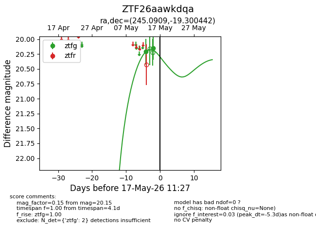
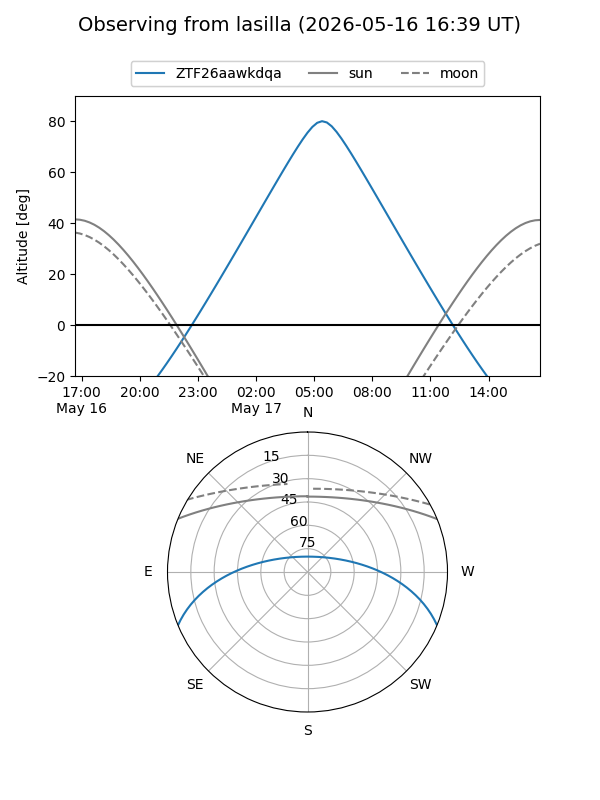
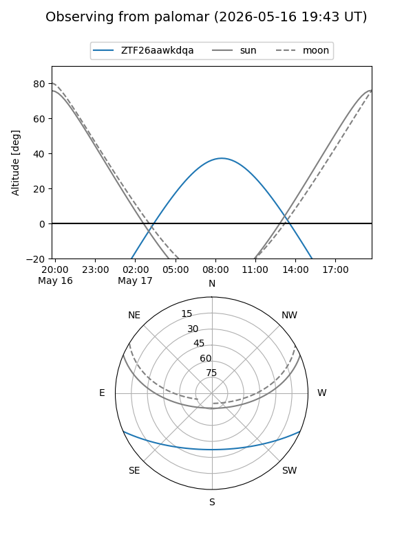
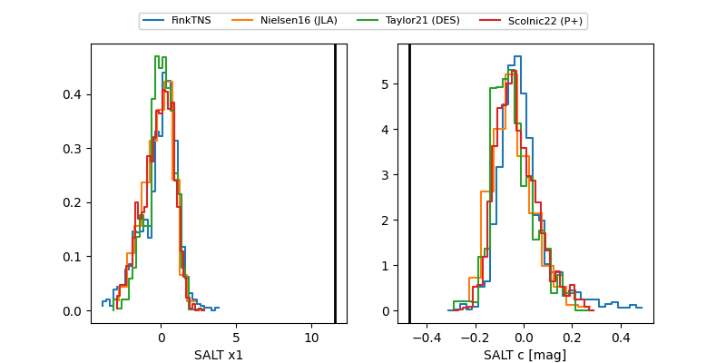

ZTF26aawkdqa
Target ZTF26aawkdqa at 2026-05-17 11:29
Aliases and brokers:
FINK: link
Lasair: link
ALeRCE: link
alt names
ZTF26aawkdqa (ztf,fink_ztf)
Coordinates:
equatorial (ra, dec) = 245.0909,-19.30044
equatorial (HMS+DMS) = 16:20:21.83,-19:18:01.59
galactic (l, b) = (356.1509,+21.33043)
Flags:
Photometry:
last ztfg=20.15
2 ztfg detections
Lightcurve

Visibility


Additional plots
